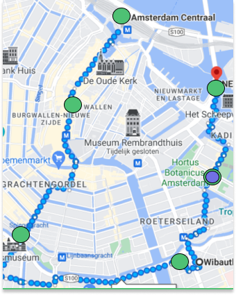
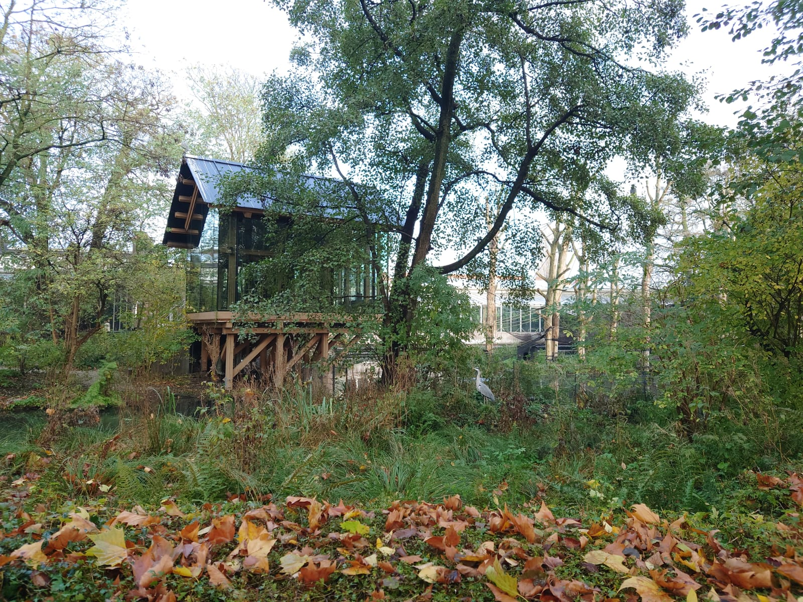

Amsterdam City Centre

Start
Artis

Natura Artis Magistra is a zoo and botanical garden in the centre of Amsterdam. It is the oldest zoo in the Netherlands and fifth oldest zoo in the world. In addition to the zoo, Artis also contains an aquarium, a planetarium, an arboretum, Micropia, and the Groote Museum. A part of the art collection is on display in the aquarium building of the zoo. Artis contains 27 historically significant (listed) buildings, bridges, and ponds, most of which are still used as animal enclosures.